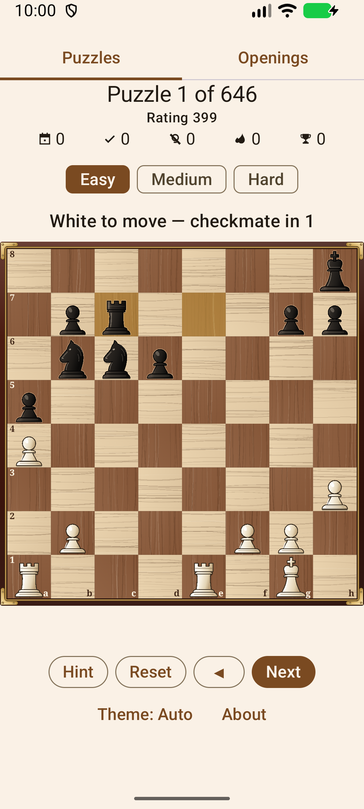
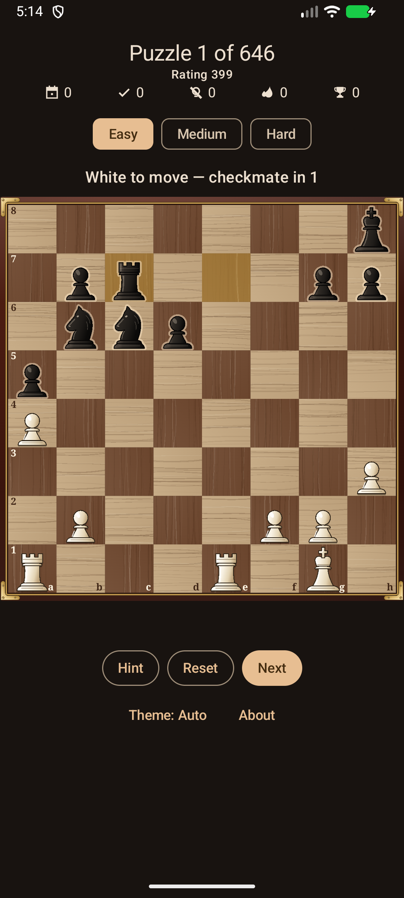
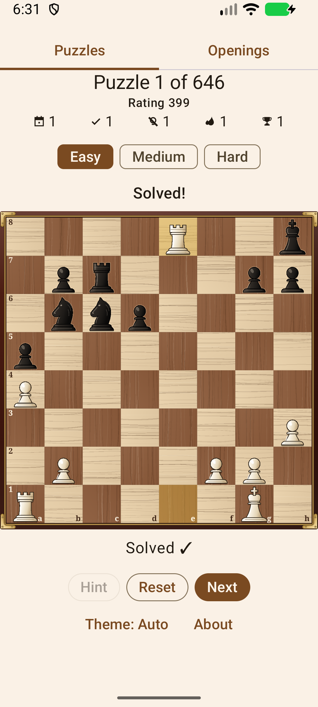
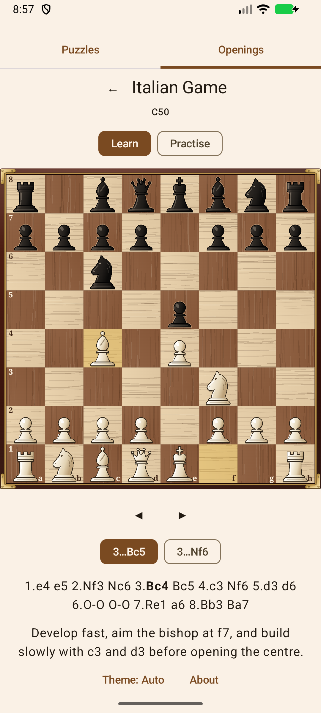

🧩
Puzles reales de Lichess
Miles de tácticas seleccionadas de la Lichess Open Database (CC0).
Resuelve miles de puzles reales de la base de datos de Lichess en tu teléfono Android. Encuentra cada jugada de la solución mientras el rival responde automáticamente.
Gratis y de código abierto · Android 7.0+ · sin cuenta, totalmente sin conexión
Sin menús que atravesar y sin registro. Abre la app y ya estás resolviendo puzles.
Miles de tácticas seleccionadas de la Lichess Open Database (CC0).
Cada puzle anuncia su objetivo, como «jaque mate en 2» o «ganar una ventaja decisiva». Encuentra cada jugada de la solución; el rival responde después de cada una.
Fácil, Medio o Difícil: salta entre franjas de rating con un solo toque.
Aprende veinte aperturas jugada a jugada y luego practícalas de memoria contra respuestas seleccionadas.
Tu número de puzles resueltos, tus rachas de puzles y tu racha de días se guardan en tu teléfono, así que retomas justo donde lo dejaste.
Sin cuenta y sin red. Todos los puzles vienen incluidos en la app.
Sigue el ajuste claro u oscuro de tu teléfono, o cambia a Claro u Oscuro con el botón Tema. El tema oscuro atenúa el tablero para jugar con comodidad.
Mueve las piezas tocando su casilla de origen y la de destino, o arrastrándolas.
Con licencia Apache-2.0. Sin anuncios y sin rastreo.
Aparece una posición de una partida real con su objetivo, por ejemplo jaque mate en 2, ganar una ventaja decisiva o salvar la partida. Juegas con el bando al que le toca mover.
Toca una pieza y luego su casilla de destino, o arrastra la pieza hasta allí. Si tu jugada no es la mejor, inténtalo de nuevo.
Después de cada jugada correcta, el rival responde automáticamente. Sigue jugando con tu bando hasta resolver el puzle.
Resuelve el siguiente. Tu progreso se guarda en tu teléfono.
Gratis y de código abierto, para Android 7.0 y posterior. Instálala desde F-Droid o descarga el archivo de instalación de Android (APK) desde GitHub.




El código fuente es público, así que puedes revisarlo y compilar la app tú mismo. Las pruebas automáticas ejecutan cada línea del código salvo las funciones que dibujan las pantallas, y otras pruebas aparte comprueban esas pantallas. Lee el código fuente.
Puzles de la Lichess Open Database (CC0 1.0).